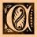

|
 oncerning Ubbo-Sathla
 bbo-Sathla is the source, the unbegotten beginning from whom came those who dared set themselves against the Elder Gods who ruled from Betelgueze, those who warred upon the Elder Gods, the Great Old Ones led by the blind idiot god, Azathoth, and Yog- Sothoth, who is All-in-One and One-in-All, and upon whom are no strictures of time or space, and whose agents are 'Umr At-Tawil and the Ancient Ones, who dream forever of that time when once again they shall rule, to whom rightfully belong Earth and the entire universe of which it is a part... Great Cthulhu shall rise from R'lyeh, Hastur the Unspeakable shall return from the dark star which is in the Hyades near Aldebaran, the red eye of the bull, Nyarlathotep the messenger of the Ancient Ones shall howl forever in the darkness where he abideth, Shub-Niggurath shall spawn his thousand young, and they shall spawn in turn and shall take dominion over all wood nymphs, satyrs, and the Little People, Lloigor, Zhar, and Ithaqua shall ride the spaces among the stars, and those who serve them, the Tcho-Tcho, shall be ennobled, Cthugha shall encompass his dominion from Fomalhaut, and Tsathoggua shall come from N'kai. ... They wait by the gates, for the time draws near, the hour is soon at hand, and the Elder Gods sleep, dreaming, and there are those who know the spells put upon the Great Old Ones by the Elder Gods, as there are those who shall learn how to break them, as already they know how to command the servants of those who wait beyond the door from Outside. For Ubbo-Sathla is the source and the end. Before the coming of
Tsathoggua or Yog- Sothoth or Cthulhu from the stars; Ubbo-Sathla dwelt in
the steaming fens of the new- made Earth: a mass without head or members,
spawning the gray, formless efts of the prime and the grisly prototypes of
terrene life.....And all earthly life, it is told, shall go back at last
through the great circle of time to Ubbo-Sathla. |
 Of ye Old-Ones and Ancient
Times Of ye Old-Ones and Ancient
Times |